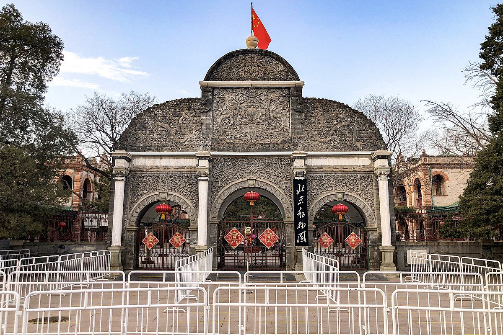
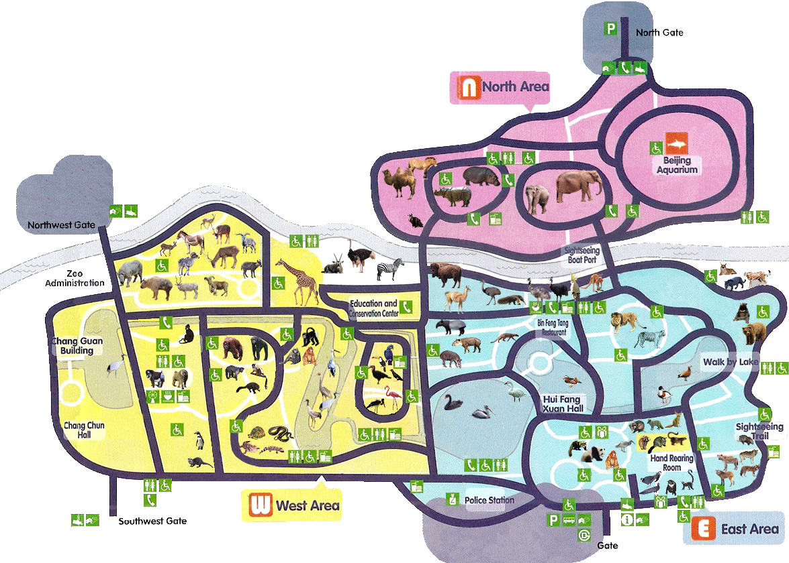

About Us
We are Beijing Zoo, We are a Zoo in China for young and old. We are located in Xizhimen, Xicheng District, Beijing and we were founded in 1906.
We are the oldest Zoo in all of China and home to 14,500 animals. Some of them are Giant pandas, Red pandas, the Golden snub-nosed monkey and your normal zoo animals like Elephants and giraffes.
All our animals consist of 450 land animals and 500 marine animals.
We have multible buildings like the Amphibian and Reptile House, Elephant House, Panda House Rhinoceros, Hippo House, Beijing Aquarium, Aquarium interiorand the Zoology Museum.
We also have historical places like the Changguanlou, The Leshan Garden, Office House, formerly the Office House of Imperial Agriculture Examination Field, Lamarck Hall and the Tomb of Four Martyrs.

On This Site
On this site you will be able to see multible things like live-cams and a map.
You can also take a look at our webshop.
Other than that there is also a page with official news from our Zoo, where you can read about the animal events and many more
News about animals events and other things will all be there
At the last page you will find all the infomation to contact us. Or you can write a message straight from the website to our help center.
And last but not least you can also buy tickets for our Zoo.
